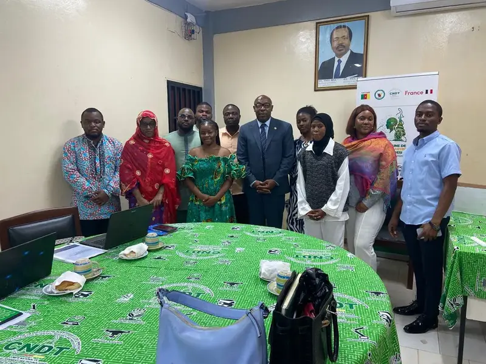
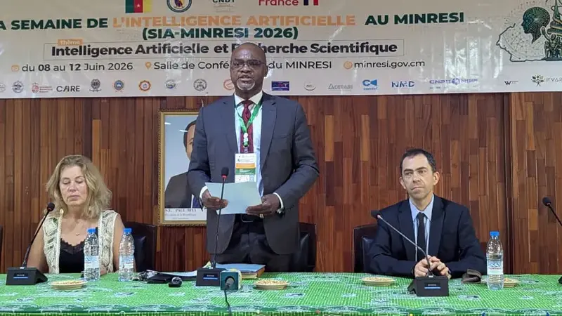

Rétrocession de la plateforme énergétique rurale numérique à la Commune de Bayangam
Une étape importante dans la mise à disposition d’outils technologiques adaptés aux besoins des collectivités.
Lire l’actualité
Information institutionnelle
Retrouvez les activités scientifiques, rencontres, projets et publications du CNDT.
Une étape importante dans la mise à disposition d’outils technologiques adaptés aux besoins des collectivités.
Lire l’actualité
Des échanges entre chercheurs, administrations, entreprises et jeunes innovateurs autour des usages responsables de l’IA.
Lire l’actualité
Une réflexion scientifique consacrée aux infrastructures, aux données et aux compétences adaptées au contexte camerounais.
Lire l’actualité
Un atelier destiné à mieux protéger les résultats de recherche et à favoriser leur valorisation économique.
Lire l’actualité
Le CNDT accompagne la réflexion sur le passage des résultats scientifiques aux solutions concrètes et durables.
Lire l’actualité
Une mobilisation des acteurs pour mieux orienter la veille et le transfert des technologies vers les priorités nationales.
Lire l’actualité